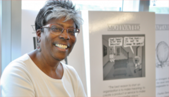

STARS Instructors
Jason Williams

Jason Williams is Assistant Director, Inclusion and Research Readiness at the Cold Spring Harbor Laboratory DNA Learning Center where he develops national biology education programs. Jason leads education, outreach, and training for CyVerse (US national cyberinfrastructure for the life sciences) and has trained thousands of students, researchers and educators in bioinformatics, data science, and molecular biology. Jason’s focus has been developing bioinformatics in undergraduate education and career-spanning learning for biologists. Jason is founder of LifeSciTrainers.org – a global effort to promote community of practice among professionals who develop short-format training for life scientists. Jason is advisory to cyberinfrastructure, bioinformatics, and education projects and initiatives in the US, UK, Europe, and Australia. He is also a teacher at the Yeshiva University High School for Girls.
Carol Carter

Dr. Carter joined the Stony Brook University (SBU) faculty as a tenure-track Assistant Professor in the Department of Molecular Genetics & Microbiology, School of Medicine, after graduating from the City College of New York (Phi Beta Kappa), earning her PhD at Yale U and completing postdoctoral studies in virus replication and protein biochemistry at the Roche Institute of Molecular Biology. At SBU, she advanced through the ranks to Professor and is an Adjunct Professor in the Department of Physiology & Biophysics. Dr. Carter leads a federally funded basic research program focused on the pathogenesis of AIDS and other viral-induced diseases and has served on the editorial boards of journals in her field and federal, state and private advisory committees. Her research centers on cellular protein trafficking mechanisms necessary for production of virus particles and how they might be targeted for anti-viral drug design. Aspects of her work have been exhibited in the Museum of Science & Technology (Chicago IL, 2000) and translated into issued or pending patent/licenses. Dr. Carter was a featured speaker at the “Women in Science” workshop sponsored by the International Union of Biochemistry and Molecular Biology (Japan, 2006), is a member of several SBU Graduate and Medical Sciences Training Programs in Infectious Diseases, Cancer, and Genetics and has participated in teaching of undergraduate, graduate, medical, and dental students. She has been the recipient of the “SBU Exceptional Service to Undergraduate Education” award, was recognized by the office of the SBU President for her service in initiatives promoted by the Center for Inclusive Education, received the 2016 Suffolk County Public Service award and, for her translational work, the 2017 Long Island Innovator award. She gratefully acknowledges the enthusiastic support and encouragement of the CSHL Director David Micklos and Assistant Director Jason Williams, without whose talents, dedication and commitment this opportunity could not have been developed.
David Johnson

David Johnson is a rising 4th year graduate student at the Watson School of Biological Sciences at Cold Spring Harbor Laboratory. He joined Dr. Alea Mills’s Lab in 2017 where his current thesis research involves implementing CRISPR technology to study epigenetic proteins in brain cancer. David graduated from Brown University Class of 2016 where he attained his Sc.B in Neuroscience. Whilst at Brown, he was a Minority Peer Counselor, where he was trained in implementing safe spaces for URMs students at and responsible for understanding and addressing the various “-isms” (racism, sexism, classism, ableism, etc). Additionally, he was chosen to be part of the New Scientist Program which is designed to support URMs undergraduate students pursuing a degree in STEM. During his senior year, David was chosen to be Head Coordinator of the New Scientist Program along with 3 of his peers. As head coordinator he and his peers were responsible for training mentors, as well as establishing and maintaining mentorships for 60-70 students. Currently, David Johnson, is co-president of DIAS (Diversity Initiative for the Advancement of STEM) a student run group at Cold Spring Harbor Laboratory whose purpose is to provide and advocate for a safe space for URM scientists. Last but not least, David is an accomplished graduate student who was awarded the NSF GRFP in 2017, and this year was awarded the HHMI Gilliam Fellowship.
Brittany Johnson

Brittany is a Middle School Educator at the DNA Learning Center. She graduated with a Bachelor of Arts in Biology from Fisk University, and a Master of Biological Medical Sciences from Mississippi College. Brittany’s involvement with the DNALC began when she attended school trips and participated in a Summer DNA Program creating antibiotic resistant genes held at Central Islip High School. She was grateful for the teachers who made sure she and others had the opportunity and exposure to this style of learning. Later, while volunteering in the then Central Islip School District (CISD) Mulligan Science Center a DNALC Educator came to do a lab, eventually leading her to pursue an opportunity to start a career with the DNALC team. The DNA Learning Center sparked an interest she never forgot, and as an educator, it is her aspiration to encourage critical thinking, while creating an environment and an excitement for learning.
Advisors and Supporters
Thank you to the various supporters who have made it possible for us to make this idea a reality. Their support enabled us to refine our ideas for the camp, recruit students, and develop the curriculum. We also want to acknowledge others possibly not listed here who contributed in other ways including teachers and advisors who helped spread the word, administrators who helped distribute flyers, and anyone else who helped behind the scenes.
David Micklos
David Micklos is the Founder and Executive Director of the Cold Spring Harbor DNA Learning Center. His support has made it possible for us to hold this first year of the STARS program without any external funding for supplies and staff time. He originally conceived of the idea of holding a dedicated DNALC camp that would serve to support underrepresented students in STEM and embraced the opportunity to collaborate with Professor Carter and her colleagues at Stony Brook University, who were seeking a setting for such an initiative.
Beatrice Toliver
Chairperson, NAACP Long Island ACT-SO (Afro-Academic, Cultural, Technological and Scientific Olympics) Program
Jennie Williams
Professor, Stony Brook University School of Medicine; Director, Inducer (Increasing Diversity in Undergraduate Cancer Biology Education and Research) Program
Judith Berhannan
Dean of Admissions, Stony Brook University
Kamazima Lwiza
Professor, Stony Brook University School of Marine & Atmospheric Sciences